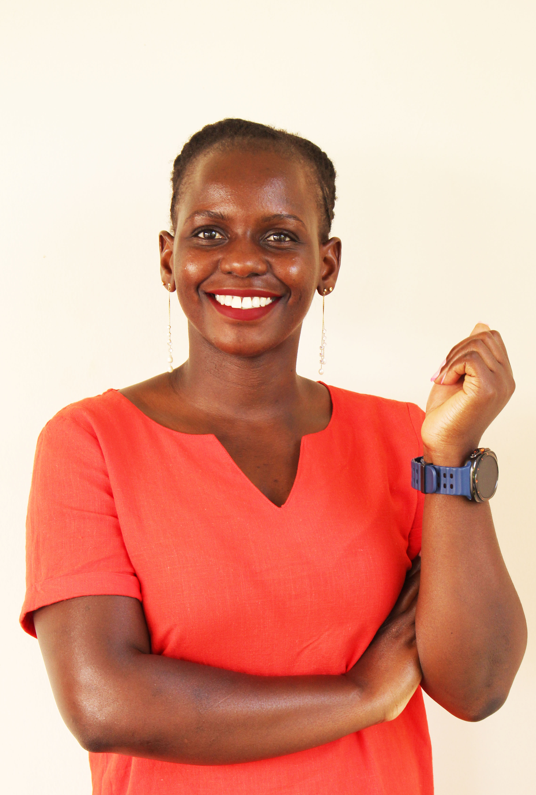

Our Story
Why we began
Jdiobe STEM Foundation was established to address a simple but urgent reality: many talented students in underserved communities have the ability to succeed in science, technology, engineering, and mathematics, but lack the resources and support needed to pursue that path.

The barrier
For many students, the barrier is not ability. It is the cost of education, limited exposure to STEM careers, lack of mentorship, and the absence of professional networks that can help them imagine and prepare for a different future.
Our response
The foundation was created to help close that gap. Our work focuses on supporting students not only with financial assistance, but also with guidance, encouragement, and real world exposure that helps them build confidence and direction.
We believe that when students are given access to opportunity, they can become engineers, scientists, researchers, entrepreneurs, educators, and problem solvers who strengthen their communities and contribute to global progress.
Where we focus
- Robotics
- Aerospace
- Water monitoring
- Environmental engineering
What drives us
Mission & Vision
Mission
To empower underserved students through access to STEM education, scholarships, mentorship, and innovation driven opportunities that prepare them to become future leaders and problem solvers.
Vision
A world where every student, regardless of background, has the opportunity to access quality STEM education and contribute to solving local and global challenges.
Founder’s Journey
A foundation shaped by education, engineering, and service
-
The founding
Jdiobe STEM Foundation was founded by Dr. Muwanika Jdiobe, an aerospace engineer, educator, and researcher committed to expanding access to STEM education globally.
-
Engineering and academia
His background in engineering and academia shaped the foundation’s belief that education should connect knowledge with real world opportunity. Through his own academic and professional journey, Dr. Jdiobe recognized how mentorship, exposure, and support can change what a student believes is possible.
-
A conviction, made concrete
The foundation reflects that conviction. It is designed to help students access education, develop confidence, connect with mentors, and pursue STEM pathways that can transform their futures.
-
From Uganda, across borders
Dr. Jdiobe’s journey from the classrooms of Uganda to earning a Ph.D. in Mechanical and Aerospace Engineering in the United States inspired a vision to give back. What began as personal outreach grew into a cross-border nonprofit bridging continents, resources, and ideas for the next generation of STEM leaders.
Our Values
The principles that guide our work
Access
We believe capable students should not be limited by financial barriers, geography, or lack of exposure.
Mentorship
We believe guidance from educators, professionals, and role models can change the direction of a student’s life.
Innovation
We encourage students to use STEM knowledge to solve real problems in their communities and beyond.
Service
We are committed to building opportunities that create lasting impact for students, families, and communities.
Where We Work
Rooted in Uganda, connected to global opportunity
With its unique cross-border structure — registered in the United States and operating in Uganda — the Foundation bridges continents, resources, and ideas.
Our goal is to connect local talent with the resources, mentorship, and learning experiences needed to participate in a global STEM future. Our work continues to grow through partnerships with schools, universities, and communities united by the belief that brilliance exists everywhere, but opportunity must be built.

Areas of operation
Uganda
Primary area of impact — scholarships, mentorship, and STEM outreach.
View programs
South Sudan
Teacher training, access to equipment, and mentorship pathways.
View programs
United States
Registered nonprofit; Oklahoma City office for administration and fundraising.
Global partnerships
Schools, universities, and collaborators extending student opportunity.
Moving Forward
We are building pathways, not just programs.
Our work is about helping students see what is possible, access the support they need, and become part of the next generation of STEM leaders.


Mentorship
Meet Our Mentors
Practitioners and educators who walk alongside our students — offering guidance, perspective, and the encouragement that turns potential into a pathway.

Rose Auma
Senior Civil Engineer
Dam Safety
Structural Engineering
Equity & Merit Scholar
A Senior Civil Engineer specialising in dam safety and structural engineering. Rose brings professional practice and academic training together to help students see a concrete path from classroom STEM into engineering careers.
- Currently
- Uganda Electricity Generation Company Ltd.
- Graduate of
- The University of Manchester

Volunteer With Us
Join our mission to empower the next generation of STEM leaders. Whether you want to mentor, organize events, or support our outreach, your contribution makes a difference!
Apply to Volunteer